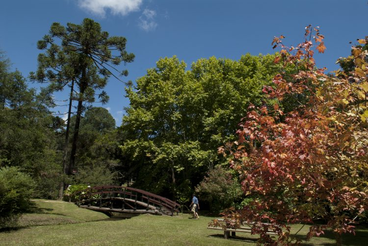

Parque Estadual Horto Florestal
O Parque Estadual do Horto Florestal conta com 8,3 hectares de área preservada em Campos do Jordão. É um passeio onde o turista fica em contato direto com a natureza, lindas paisagens com lagos, trilhas e bosques. Sua infraestrutura oferece área de ginástica, restaurante e loja de artesanato. E fica aberto diariamente, das 9h às 16h. É um dos pontos turísticos de Campos do Jordão que não pode deixar de fora do seu roteiro de passeios.